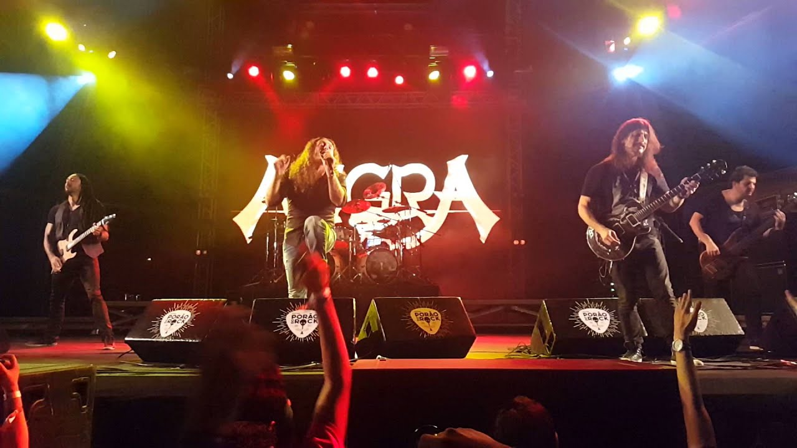
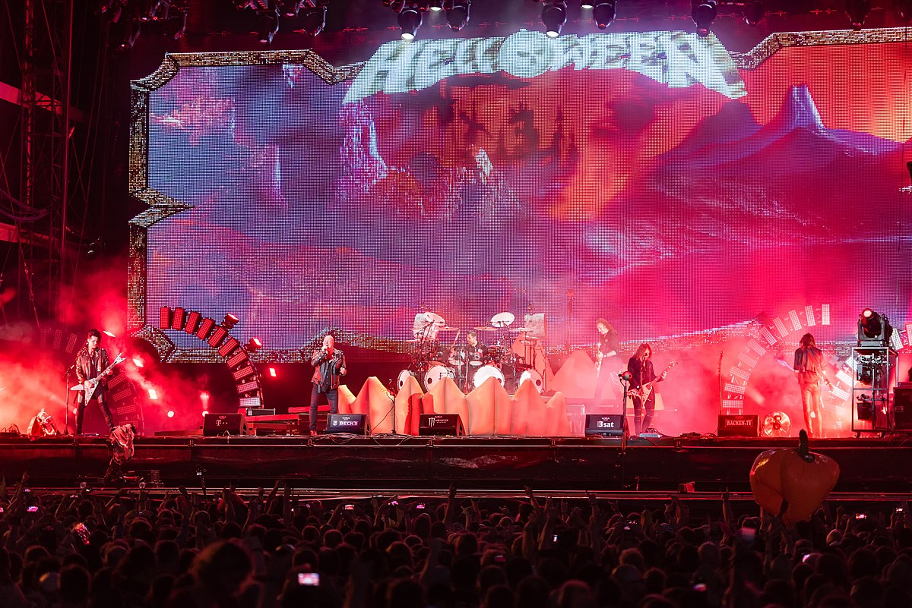
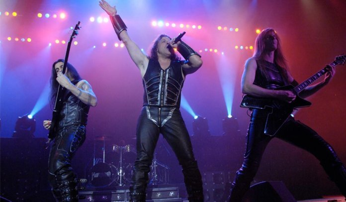
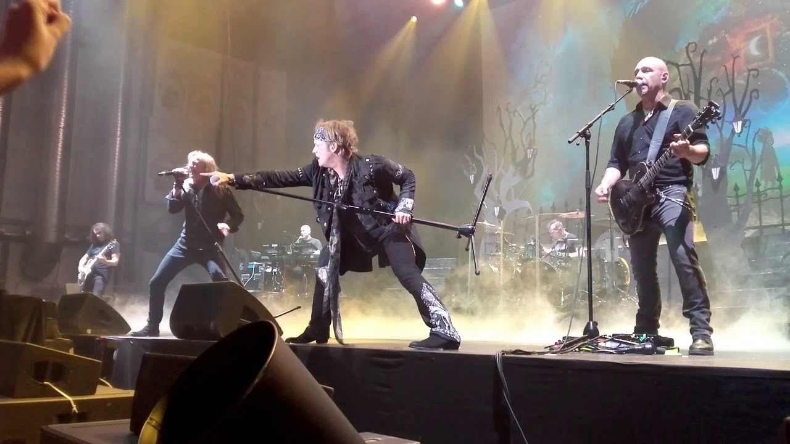
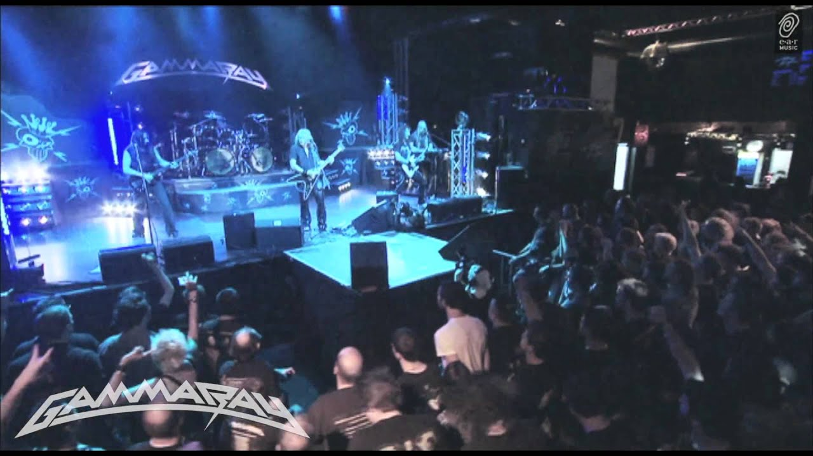

História do Power Metal:  Power metal é um subgênero do heavy metal que combina características do metal tradicional com speed metal, muitas vezes com forte influência da música clássica. Geralmente, o power metal é caracterizado por um som mais animado, em contraste ao peso e dissonância prevalecentes em estilos como Trash Metal, doom metal e death metal. Bandas de power metal usualmente têm seus "hinos" com temática de fantasia e fortes refrões, criando, assim, um potente som teatral, dramático e emocional. O termo foi usado pela primeira vez em meados dos anos 1980 e refere-se a dois estilos distintos, mas relacionados: o primeiro foi pioneiro e amplamente tocado na América do Norte com um som forte e bem similar ao speed metal; o segundo foi disseminado e ganhou popularidade na Europa (especialmente na Escandinávia, Alemanha, Polónia, Grécia, Espanha e Itália), América do Sul (especialmente Brasil e Argentina), Hong Kong e Japão, com sonoridade mais limpa e melódica, fazendo muito uso de teclados. Hoje o power metal é um estilo com seus próprios subgêneros e gêneros de fusão, cada um com suas particularidades, uns mais "pesados", outros mais "melódicos", outros possuem uma linha tênue, quase imperceptível quanto ao "peso" do subgênero. Por ser um estilo que em suas origens procurou fundir outros, concretizou a ideia de "fundir para inovar", mas sempre mantendo as raízes tradicionais que marcam o heavy metal, como distinções melódicas e distorções instrumentais. Origens:  O antropólogo Sam Dunn traçou as origens do power metal até o fim dos anos 1970, quando o alicerce para o estilo lírico do power metal era criado por Ronnie James Dio. As letras orientadas a fantasia que ele escreveu para o Rainbow permeavam temas sobre a era medieval, a renascença, folclore e ficção científica, influenciando diretamente bandas de power metal modernas Foi mencionado que as canções "Stargazer" e "Kill the King", dos álbuns Rising (1976) e Long Live Rock 'n' Roll (1978) respectivamente, podem ser os primeiros exemplos de power metal. Em sua série de documentários de 2011 chamada Metal Evolution, Dunn ainda explicou como Rob Halford do Judas Priest criou o esboço da representação dos vocais de power metal: seu canto, quase constante em notas altas, tornou-se uma das características do gênero. O som das guitarras gêmeas promovido pelo duo K.K. Downing e Glenn Tipton influenciaram fortemente o power metal. Outro pioneiro do gênero é Jon Mikl Thor, que serviu de forte inspiração para a banda americana Manowar. O surgimento da cena inicial do power metal alemão, em particular, foi possível em razão de Scorpions e Accept. O guitarrista sueco Yngwie Malmsteen causou um impacto significante em muitos dos futuros guitarristas de power metal, com seu estilo habilidoso, rápido e neoclássico. Seu colega de banda Jens Johansson modernizou o som do teclado de Jon Lord do Deep Purple, o qual foi sendo incorporado ao gênero. Em 1987, Helloween , liderado por Kai Hansen e Michael Weikath, lançava seu segundo disco, Keeper of the Seven Keys Pt. 1, citado pelo Allmusic como "ponto de referência que permanece indiscutivelmente como a gravação mais influencial do power metal até hoje. Sua combinação volátil de poder e melodia inspiraria toda uma geração de bandas de metal". As letras de espada e feitiçaria mitológicas do Manowar também influenciaram um bom número de bandas de power metal. Outro grupo inglês, o Iron Maiden, trouxe uma sensibilidade melódica e épica ao metal, criando hinos e músicas de cantoria, uma abordagem amplamente abraçada por músicos de power metal. Desenvolvimento:  Em meados da década de 1980, outros agrupamentos musicais também contribuíram fortemente com a base do power metal, como Jag Panzer, Crimson Glory, Manilla Road, Anvil, Tank, Raven, Running Wild, Rage e Grave Digger, que tinham como importante aspecto o power chord, que davam um som bem pesado e potente às guitarras. Esta característica somada ao ritmo veloz, tom épico e vocais mais desenvolvidos que o normal, deu à essa leva de grupos o rótulo de speed/power metal clássico, uma espécie de "primeira onda" do que se seguiria futuramente. No fim dos anos 80 começou o que logo se denominaria nos anos 90 como o movimento do "euro-power", estilo dentro do power metal mais adequado aos tempos modernos, tendo como principal característica a clara influência do NWOBHM. As melodias também são partes cruciais deste gênero, iniciado pelo Helloween e desenvolvido quase exclusivamente na Europa. Durante os anos 90, tomando como base o speed e heavy metal melódico, os grupos que surgiam (Blind Guardian, Stratovarius, Rhapsody of Fire, Hammerfall, Sonata Arctica, Angra, Edguy, Kamelot e Gamma Ray) acrescentavam um teclado muito importante à sonoridade final, com habituais coros épicos, grande destreza técnica nas guitarras (com solos espetaculares) e na bateria (com grande velocidade no bumbo duplo), letras sobre fantasia e, ocasionalmente, sons de orquestra. A razão pela qual o power metal seguiu crescendo nos anos 90 foi porque mostrava-se o oposto dos gêneros de metal mais extremo, como black metal e death metal, os quais centravam suas letras em temas obscuros, sobre morte, sobrenatural, religião, etc. Assim, o metal melódico ganhava cada vez mais popularidade mundo afora – especialmente na Europa, Japão e América do Sul, enquanto outros gêneros, tal como o thrash metal, estavam em decadência durante esta década, muito em razão da onda de rock alternativo do momento. Vários críticos classificam o power metal dos anos 80 como speed metal ou power metal tradicional, em tempo que consideram o melódico e sinfônico como o "principal", mas ainda assim sendo alvo de discussões e debates. Características do estilo:  O estilo é distinto pelo retorno ao tradicional heavy metal que vinha se perdendo em estilos mais "duros" e divergentes, como o death metal; o estilo marcante no power metal tratou, como ideia original, de conservar as principais características do gênero. Segundo o musicólogo Robert Walser, duas características se sobressaem no que ele chama de metal melódico: Primeiro, o padrão melódico se distingue por longas notas, que dão sensação de poder (daí a origem do nome) e intensidade. O uso de sustenidos, assim como o som "rasgado" das distorções contribuem principalmente para o som mais bruto e extremo. Segundo, o uso de síncopes dos vocalistas em suas linhas melódicas tornam a música singular e dão o tom inesperado tão marcante do estilo. O vocal geralmente é caracterizado por uma voz limpa e suave (Timo Kotipelto), ou mais grave (Rolf Kasparek), sem gutural. Muitos vocalistas de bandas do gênero tem em suas características, a capacidade de obter notas extremamente altas com vocais agudos, e mantê-las por um longo período de tempo. É comum os vocalistas construírem linhas vocais prolongadas, assim como inserir sílabas entre os compassos, de modo que ao mesmo tempo em que se desconstrói um metodismo existente na música, se constrói o lirismo em combinação com os instrumentos. A utilização de duas guitarras é indispensável para o power metal (apesar de em raros casos uma única guitarra ser usada tendo como apoio um teclado, por exemplo, como dito abaixo), sendo elas velozes como as do speed metal, e harmônicas como as do heavy metal tradicional. Tendo solos em quase a totalidade das canções. Algumas bandas como Stratovarius, Rhapsody of Fire e Sonata Arctica utilizam somente uma guitarra e ao invés de outra guitarra, utilizam um teclado, sendo este tão veloz como a guitarra. É comum também, ao longo da melodia, o volume, compasso ou ressonância da guitarra ser amenizada propositalmente com o objetivo de valorizar passagens em que o vocalista assume o papel principal na música. Assim como na guitarra, o baixo deve haver velocidade em sua maneira de tocar, seguindo o mesmo compasso da bateria. Explorando muito também técnicas como tapping (bater nas cordas com as pontas dos dedos) e slap (bater e puxar as cordas E não raramente o uso de palhetas para um som mais pesado e articulação limpa. Aos bateristas é reservado a opção de escolha entre bumbo duplo ou não, sendo que na maioria das vezes eles optam por utilizarem dois bumbos. Normalmente tocada com sequencia de batidas em semicolcheia. Instrumentos alternativos são normalmente usados no gênero, característica obtida na Europa. A constante utilização de teclados é normal na musicalidade do estilo, assim como o uso de elementos sinfônicos. O gênero possui em suas letras temas bastante variados, bandas como Blind Guardian e Rhapsody of Fire têm preferência pela fantasia, medievalismo e misticismo (influenciados, quando não por criação própria, pela literatura de J.R.R Tolkien, ou pelos contos do Rei Artur e similares), também é possível encontrar músicas românticas, como no Sonata Arctica, outras com muita positividade a exemplo da banda Stratovarius e Helloween assim como temas políticos e/ou históricos, como nas bandas alemãs Gamma Ray, Running Wild e Grave Digger. A respeito do cristianismo e religiosidade, quando o tema é abordado, dividem-se as bandas que apoiam ou criticam. Popularização global: Apesar de existir bandas do gênero na América do Norte, o estilo não é popularizado como um estilo influente neste local, mas sim um estilo underground. Sua maior concentração de fãs, são basicamente europeus de países onde a cena é mais forte, como: Alemanha (onde se encontra as principais bandas do gênero), Itália e países escandinavos. E também em massa no Japão, Coreia do Sul e América do Sul, onde se destaca principalmente: Brasil, Argentina e Chile. Países como Inglaterra, França, Grécia e Espanha aumentaram muito seu número de fãs nos últimos anos e já é possível perceber um número significativo de bandas do gênero surgidas por lá. A Rússia também possui uma forte cena, porém, grande parte das bandas, tais como Ария, АЭЛЛА, Арктида, Ольви, Эпидемия, Король И Шут, ДДТ, etc., optam por cantar em russo, fazendo com que não sejam muito conhecidas no mundo ocidental. Cenas regionais:  Alemanha: O teutonic power metal (referente aos teutões, povo germânico) é mais pesado e utiliza-se menos teclados. A sonoridade soa muito comum ao metal tradicional, neste país que surgiu o power metal, e onde se encontra o maior número de bandas do gênero, como: Helloween, Gamma Ray, Blind Guardian, Running Wild, Grave Digger, Edguy, Primal Fear, Masterplan, Freedom Call, Mob Rules, Heavens gate, Rebellion, etc. Japão: O power metal japonês é bastante melódico, clássico e por vezes com sonoridade progressiva e veloz, com letras geralmente sobre fantasia, época medieval, romance e emoções humanas. A grande banda que iniciou este movimento e que é considerada uma das bandas que iniciou o power metal moderno foi X Japan nos anos 80,outras bandas começaram a surgir mais tarde como Galneryus que ganhou fama pelos seus instrumentais complexos, Concerto Moon, Ark Storm e mais recentemente a banda de symphonic power metal Versailles (banda) que tem ganho fama mundial muito rapidamente. Itália: O power metal italiano é melódico, normalmente clássico com sonoridade progressiva, com pesadas letras fantasiosas, com uma particularidade muito veloz. Essa cena explodiu nos anos 90, e ainda há bandas fortes no cenário do metal, como Rhapsody of Fire, Labyrinth, Thy Majestie, Mastercastle, Elvenking, Vision Divine e White Skull. Suécia: Uma espécie de fusão entre a cena italiana e alemã. O power metal sueco caracteriza-se por um som mais ruído, porém com menos velocidade que o italiano, e com menos influências tradicionais como o alemão. Como representantes pode-se citar as bandas Hammerfall, Falconer, Dragonland, Sabaton e Dream Evil. Finlândia: A Finlândia assim como a Itália, possui um power metal mais melódico, com fortes influências da música clássica. Entre as bandas famosas do país estão: Stratovarius, Sonata Arctica, Nightwish e Celesty. Brasil: O Brasil já tem uma certa tradição no power metal, embora suas bandas não sejam muito conhecidas no país, possuem renome mundo afora, principalmente no Japão. As bandas mais conhecidas do gênero são: Angra, Shaman, Almah, Hangar, Viper, Hibria, Aquaria, Caravellus e Burning in Hell. Algumas Bandas que Você deve conhecer: Formulario de pesquisa: O que você está achando sobre este site? Ajude-nos a melhorar CLIQUE AQUI Fonte: Data: 16/03/2021 – Terça - feira Horário: 15:21:02 Criado e Desenvolvido por: Pedro Rammé Figueira